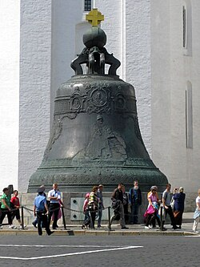
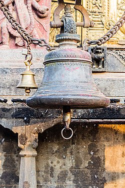
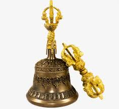
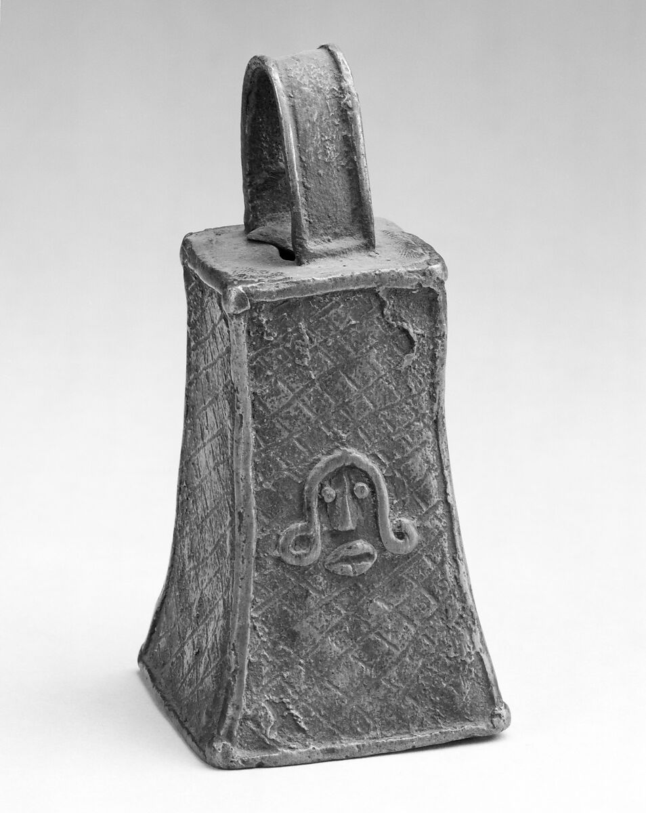
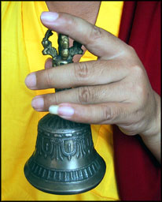

POWER OF BELLS

Introduction
In the socio-cultural landscapes of medieval Europe, auditory signals played a crucial role in delineating space and organizing communal life. The church bell, in particular, functioned as more than a mere instrument for marking time; it defined the auditory boundaries of a settlement. As historical records suggest, “the city limits of many medieval towns were marked by the sound of the church’s bell—where its resonance ended, so too did the effective reach of the city.” Bells served as sonic markers of authority, religious devotion, and social cohesion, embedding themselves into the rhythm of daily life. This phenomenon underscores the broader anthropological insight that sound, across cultures and epochs, has been utilized as a tool for structuring human experience—not only in public spaces but also within individual psychophysiological domains. A notable parallel emerges in Eastern traditions, particularly within Tibetan and Buddhist contexts, where sound has long been integral to healing and spiritual practices. Singing bowl sound meditation represents a salient example of this tradition. Employed for centuries, this practice involves the use of metallic bowls that emit harmonic overtones and vibrations believed to exert therapeutic effects on the body’s energy systems. Contemporary research has begun to explore the physiological and psychological impact of singing bowl sound meditation. Empirical studies indicate that such interventions can produce measurable outcomes, including reductions in heart rate, blood pressure, and respiratory rate, alongside significant decreases in self-reported tension, anxiety, and depressive symptoms. The underlying mechanisms, however, remain incompletely understood. Hypotheses include the entrainment of brain wave activity through auditory stimuli, the generation of binaural beats, and the modulation of the human biofield—a theorized energy field surrounding the body—by acoustic vibrations. Moreover, singing bowl meditation may contribute to the rebalancing of the autonomic nervous system, promoting parasympathetic dominance and fostering a state of relaxation and homeostasis. These findings position sound-based interventions as promising, low-cost, and low-technology adjuncts to conventional approaches for stress reduction and mental health support. Nevertheless, further longitudinal studies are warranted to clarify their long-term efficacy and potential clinical applications. The juxtaposition of the medieval church bell and the Eastern singing bowl highlights a shared human tendency to harness sound for transcending the mundane—whether to structure communal space and time or to facilitate inward journeys toward healing and spiritual well-being. This convergence invites a broader interdisciplinary inquiry into the ways sound mediates between the external world and internal states of consciousness.
literary
During the Middle Ages, many people believed that church bells possessed supernatural powers. One notable account tells of the Bishop of Aurelia, who rang the bells to warn locals of an impending attack; upon hearing the sound, it is said the enemy fled in fear. In the modern era, it is perhaps difficult to fully appreciate or imagine how loud and imposing these bells must have seemed to people of that time. There were also widespread beliefs that church bells could ring of their own accord, particularly during times of tragedy or disaster. A famous example recounts that after the murder of Thomas Becket, the bells of Canterbury Cathedral reportedly rang by themselves. This belief in the mystical power of bells persisted into the 18th century. Bells were rung to ward off evil spirits, heal the sick, calm storms before voyages, protect the souls of the dead, and even mark days of execution.
Whereas the church and temple bells called to mass or religious service, bells were used on farms for more secular signalling. The greater farms in Scandinavia usually had a small bell-tower resting on the top of the barn. The bell was used to call the workers from the field at the end of the day's work.
Christian
At the Kremlin in Moscow stands the colossal Tsar Bell (Царь–колокол) — the largest bell ever cast, a towering bronze monument weighing over 201 tons and rising 6.14 meters (20.1 ft) high. Commissioned under Empress Anna Ivanovna in 1735 by master founders Ivan Motorin and his son Mikhail, the bell was richly decorated with reliefs, saints, and floral motifs, cast with bronze alloy mixed with gold and silver.
Some alternative researchers suggest the bell’s origins stretch back far earlier than the Romanovs. According to Tartarian theories, it may have been a relic of an older lost civilization, its immense size and unique resonance pointing to knowledge of frequency technology. Legends claim Tartarian bells were more than instruments — they generated harmonic waves meant to balance cities, cleanse “spiritual noise,” or even move stone through sound.
In this view, the Tsar Bell’s fracture wasn’t accidental. Some believe it was sabotaged, intentionally cracked to prevent it from ever unleashing its supposed resonance. Even its engravings raise curiosity — while officially Christian, some patterns echo pre-Orthodox symbols and star-like geometries tied to geo-resonance
Hinduism
The Ghanta (ritual bell) is traditionally used at the commencement of Hindu rituals and puja ceremonies to invoke the deity and capture the attention of worshippers. According to ancient texts, its sound serves both as a “call to awaken the gods” and as a means to “dispel demonic forces.” It is believed to cleanse the space of negative energies or malevolent spirits, while simultaneously diffusing positive energy throughout the temple and among the devotees. The bell’s resonant tone is thought to purify the mind, momentarily silencing worldly thoughts and enabling complete concentration on worship. The sound of the Ghanta is often likened to “Om,” the primordial sound symbolizing ultimate consciousness in Hindu philosophy. This association is believed to deepen the spiritual connection between devotees, the cosmos, and the divine. Prominent examples of this practice can still be observed in the famous temples of India, where ritual bell ringing remains an integral part of daily worship.
Hindu user:One user shared that the sound of the bell “awakens the inner self and alerts the Divine,” and helps with full mental presence during worship.Others have asserted that the sound of the bell balances the flow of energy in the body (charka), prevents distracting thoughts, and helps focus the soul during prayer.From the Kundalini Yoga perspective, the sound of a bell energizes chakras and balances the distribution of energy in body. Also, the number of times the bell should be sounded depends on the number of letters in the mantra; accordingly the bell should be sounded 8, 16, 24, or 32 times. In Shilpa Shastras it is mentioned that bell should be made of panchadhatu – five metals, namely, copper, silver, gold, zinc and iron. These five metals represent the pancha bhoota.

Buddhist
Firstly, the Bell, known as 'Ghanta', represents wisdom and the feminine principle. During rituals, the sound of the bell is thought to call forth wisdom, alerting practitioners to be mindful and present. The intricate designs on the bell are not merely decorative; they hold specific symbolic meanings. For instance, the face of Prajnaparamita, the female deity embodying the perfection of wisdom, is often depicted on the handle. Each ring of the bell is believed to invoke compassion and awaken the mind, serving as a reminder of the transient nature of worldly phenomena. In contrast, the Vajra, or 'Dorje', symbolizes the masculine principles of compassion and skillful action. It represents the indestructible and diamond-like nature of ultimate reality. Held in the right hand during rituals, the Vajra cuts through ignorance and dispels illusion, demonstrating the power of enlightened actions. The Vajra's shape, featuring a central sphere with two sets of prongs extending outward, signifies the unity of method and wisdom, crucial components of the Buddhist path. Furthermore, the combined use of the Bell and Vajra in rituals embodies the union of wisdom and compassion, which is central to Tibetan Buddhist practice. When used together, the bell and vajra remind practitioners of the need to balance these two elements in their spiritual journey. This balance is not merely philosophical but practical, influencing how practitioners approach their daily lives, engage with others, and progress on their path towards enlightenment. Ceremonial practices often involve intricate rituals where the Bell and Vajra are used to perform specific hand gestures or 'mudras'. These gestures have powerful symbolic meanings and are believed to channel spiritual energies and blessings. For example, the 'Vajra Mudra', which includes holding the Vajra vertically in front of the chest while ringing the bell, signifies the union of wisdom and method. Through these rituals, practitioners can create a sacred space conducive to meditation and insight.

In Joya no Kane (Japanese New Year's ritual), the bell is rung 108 times to remove 108 worldly desires (kleshas) that block the path to enlightenment.
Some Buddhists associate the bell with “Nada Yoga” (sound yoga) as the frequencies help balance vital energy (prana).
Some monks criticize the "sound therapy market" that has spread in the West (such as singing bowls), saying that it is not an authentic part of Tibetan Buddhism, but a modern addition.
Japanese
The ringing of the bell signifies the end of one year and the beginning of another. It is rung eight times to give thanks for the old year, and another eight times to welcome the new year. If it is rung twice, it signifies some sort of disaster or distress. It is a common tradition in several cultures to ring a sacred bell on New Year's Eve to thank the old year and welcome the new year. It is usually a church bell that is rung twelve times; in Japan, Buddhist temples ring their bells a total of 108 times to symbolize the 108 human sins in Buddhist belief, and to get rid of the 108 worldly desires regarding sense and feeling in every Japanese citizen.
bells in various African civilizations and cultures
In many Central African communities, healers (nganga) use bells in rituals to invoke or communicate with spirits, as part of nkisi practices. These bells are often carved or cast and believed to harness spiritual power or protect against illness Among the Hadza hunters of East Africa, ritual bells tied to dancers imitate the sound of an eland and play a critical role in transformative night dances where humans connect with ancestors and animal spirits
Across Africa, bells are much more than decoration or sound-makers—they are intertwined with communication systems, spiritual practices, social authority, and ritual traditions. Their resonance carries messages between worlds: spiritual, political, and communal.

Egyptians
Manal Mahmoud Abdel Hamid’s study (2015) concluded that bells were known since the pre-Syrian era and continued to be used until the Coptic era. They were made of bronze, faience, and pottery. And Archaeologists and ancient Egyptians suggest that bells first entered Pharaonic Egypt around the 8th century BC, particularly during the Late Ptolemaic and Roman periods.
Some examples show faces of the god Bes, such as bronze bells with his face, sometimes decorated with lizards and a reptile skeleton above the ears.
Usags in History Civilization
Ancient egyptians
As far as we know, bells were used by the ancient Egyptians to “wake up” the crops. Some studies assert that boats carrying bells sailed down the Nile river at the beginning of the spring, letting the farmers know that the planting season had started. Bells were also used by the Pharaohs, but not in the sense we know them today for churches. Small bells made of metal or wood were used in religious contexts and magical talismans, in addition to their use in ceremonies and some rituals related to sacred animals.
The ancient Egyptians used to hang a bell around the neck of the slaughtered animal in rural and poor areas, whether it was a cow or a sheep, before it was slaughtered. The butcher would walk with it around the streets so that everyone in the town would hear the sound of the bell ringing and know that a sacrifice would be slaughtered and distributed to the poor.
Roman times
In Roman times, the pythoness (a priestess at Delphi of the god Apollo) would ring a bell when she predicted a special catastrophe at the Oracle. There is also evidence that some Roman baths would announce that they were open to the public by ringing big bells.
Amazigh
The Amazigh use a device called the Naqus, a type of metallic bell or clapper (in modern times often made from recycled metal like a brake disc). It’s played during weddings, festivals, and community gatherings, especially in the Atlas Mountains.
In the Taskiwin dance (from the High Atlas), a horn or belt with small bells is worn by dancers. As they move, the jingling becomes part of the rhythm, creating a synchronized soundscape with the group’s movements.
Amber was placed with bells because amber was considered a material that protected against rheumatism and respiratory diseases, and symbolized warmth and life energy. It was often used with silver, which symbolized purity and honesty. The sound produced by the ringing, whether from the bell or the jewelry, was seen as a means of spiritual purification, expelling negative energy, and balancing the energy side of society.
China
In China, the use of bells dates back to the Bronze Age. The Marquis Yi of Zeng was buried in a four-chambered tomb around 433 BC along with his most prized possessions, including 64 bronze bianzhong bells, which not only indicated his wealth and status but also that and other Asian countries, bells have been used throughout the centuries as meditation aids, a means of communication, as musical instruments, signals, time keepers, and alarms in the Buddhist and Taoist traditions. According to one historical record: Bells are the leading musical instruments made of metal. The peals of big ones can be heard five kilometers away and the strokes of small ones can reach places half a kilometer off. When a monarch held court or an official leaves his office, a hell is struck to call together their subordinates. A bell is struck at a feast to accompany the singing of songs. A bell is struck at a Buddhist or Taoist temple to draw the devotion of worshippers and the awe of ghosts and gods."

Buddhist
When you walk into a Buddhist Pagoda and you look in the ceiling, you will find many little golden bells wafted by the wind. It is the sound of the Divine voice. The vibration of the bells or the Tibetan bowls have healing powers.
India's Vijaya Vittala Temple contains 56 musical pillars carved from single stones that produce distinct tones when struck. These pillars are arranged to represent different musical instruments, with acoustic properties that have remained unchanged for over 500 years. In this temple there are specific chambers with specific frequency we are just now starting to understand to be for healing.
Hinduism
In Hindu temple architecture, bells are typically suspended from the temple dome, positioned near the Garbhagriha (the innermost sanctum housing the deity). It is customary for devotees to ring the bell upon entering the sanctum as a symbolic gesture of announcing their presence to the deity. The sound produced by the bell is regarded as highly auspicious; it is believed to welcome divine energies into the space while simultaneously dispelling negative forces or evil influences. Furthermore, the auditory resonance of the bell serves a psychological and spiritual function. It is said to disengage the mind from mundane, wandering thoughts, thereby cultivating a state of heightened receptivity and focus. The practice of ringing the bell during prayer aids devotees in quieting mental distractions and centering their attention fully on the deity, facilitating a deeper meditative connection during worship.
Islam
We find an exception in Islam. According to the Coran, the soul of a good person jumps from flower to flower like a bee. The buzz of a bell ringing, will disorient the soul on its way to heaven. This is why the muezzin (crier) calls to service from the minaret using his voice, rather than ringing a bell. The Prophet ﷺ refused to use bells to announce the call to prayer (Adhan). In fact, it is reported in a hadith that bells were considered as a temporary option but then dismissed. Abdullah ibn Umar (may Allah be pleased with them) said: the Muslims arrived in Medina, they would gather and wait for the time of prayer, but there was no call for it. One day they discussed this matter. Some of them said: ‘Let us use a bell like the Christians,’ and others said: ‘Rather, a horn like the Jews.’ Umar said: ‘Why don’t you send a man to call to prayer?’ So the Messenger of Allah ﷺ said: ‘O Bilal, stand up and call to prayer.’” (Narrated by al-Bukhari and Muslim)
Usags Of Technology
The Role of Sound in Shaping Space, Healing, and Technology: From Medieval Bells to Singing Bowls and Cymatics:
Modern research in cymatics, which studies visible patterns created by sound vibrations, shows that specific frequencies can organize matter into coherent forms. When substances like sand or water are exposed to certain sound frequencies, they arrange themselves into geometric patterns that grow increasingly complex as the frequency increases.
If ancient civilizations understood these principles, it is possible that bells were more than mere ceremonial objects; they may have functioned as precise instruments designed to generate specific frequencies for technological purposes.
1. Certain sound frequencies have been found to support cellular regeneration, reduce inflammation, and modulate brain wave patterns in ways that facilitate healing. The strategic placement of bells near healing chambers in ancient temples suggests that these instruments may have been employed for therapeutic purposes.
2.Agricultural enhancement Some research indicates specific sound frequencies can affect plant growth and resistance to disease. Bells placed in community centers might have benefited the surrounding farmland
3. The most speculative yet fascinating possibility is that certain sound frequencies may have aided in the manipulation of stone, potentially explaining how ancient builders were able to move and shape massive blocks with seemingly remarkable ease.
Fabrication
Hinduism Fabrication
The ritual bell is typically crafted from a combination of five to seven precious metals, each symbolically associated with one of the classical planets: lead (Saturn), tin (Jupiter), iron (Mars), copper (Venus), mercury (Mercury), silver (the Moon), and gold (the Sun). A clapper is suspended inside the bell, producing a distinct high-pitched resonance when struck. The design of the bell often reflects the deity it is intended for. The handle is usually crowned with a brass figure: bells used in the worship of Shiva frequently feature an image of Nandi, his sacred bull, while those employed in the rituals of Vishnu or his avatars—such as Rama, Narasimha, or Krishna—are adorned with figures of Garuda, the Panchajanya conch, or the Sudarshana Chakra. This iconographic detail reinforces the bell’s role as a sacred object, aligning it with the specific theological and ritual context of its use.
Buddhism Fabrication
A bell can be eight, twelve, sixteen, eighteen or twenty-two finger-widths in height. Its base must be round, above which is a vase surmounted by the face of the goddess Prajnaparamita. Above these are a lotus, a moon disc and finally a vajra. The hollow of the bell symbolizes the wisdom cognizing emptiness. The clapper represents the sound of emptiness. The eight lotus petals are the four mothers and four goddesses and the vase represents the vase containing the nectar of accomplishment.

history
During the restoration of the bells for the Church of Christ the Savior in Moscow, scientists from the ZIL laboratory discovered a phenomenon: the sound waves produced during ringing spread in the shape of a cross. This pattern, mathematically confirmed by Dr. B.N. Nyunin, a Doctor of Technical Sciences, suggests that the sound of bells literally "blesses" the space around them, bringing protection and harmony. Scientists found that bell sounds in the ultrasonic spectrum can destroy pathogenic microorganisms.
The most compelling evidence that bells served a greater purpose comes from examining them alongside other acoustic technologies of the ancient world. The 6,000-year-old Hypogeum of Ħal-Saflieni in Malta features underground chambers where specific frequencies (particularly around 110 Hz) create standing wave patterns throughout the structure. Modern research suggests these frequencies can affect human brain activity in the prefrontal cortex. This place is carved from one large piece of limestone. A feat even today would be most difficult if not impossible
Christians
Christianity started using bells around the sixth century, but they weren’t widely used until the turn of the first millennium. In Spain, bell ringing became mandatory in the 1500s, so let’s look back in history to learn why.
You have to remember that in 1492, the Moors were expelled from the Iberian Peninsula by the Spanish Catholic Monarchs. The Moors left behind a rich and magnificent heritage of Islamic architecture and culture. Many of their religious Muslim structures—mosques, madrasas, and minarets—were converted into Christian churches and cathedrals.